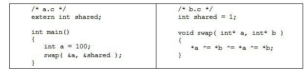

4.1 空间与地址分配
4.2 符号解析与重定位
4.3 COMMON块
4.4 C++相关问题
4.5 静态库链接
4.6 链接过程控制
4.7 BFD库
4.8 本章小结
通过前面对ELF文件格式的介绍，使我们对ELF目标文件从整体轮廓到某些局部的细节都有了一定的了解。接下来的问题是：当我们有两个目标文件时，如何将它们链接起来形成一个可执行文件？这个过程中发生了什么？这基本上就是链接的核心内容：静态链接。在这一节里，我们将使用下面这两个源代码文件“a.c”和“b.c”作为例子展开分析：

假设我们的程序只有这两个模块“a.c”和“b.c”。首先我们使用gcc将“a.c”和“b.c”分别编译成目标文件“a.o”和“b.o”：
经过编译以后我们就得到了“a.o”和“b.o”这两个目标文件。从代码中可以看到，“b.c”总共定义了两个全局符号，一个是变量“shared”，另外一个是函数“swap”；“a.c”里面定义了一个全局符号就是“main”。模块“a.c”里面引用到了“b.c”里面的“swap”和“shared”。我们接下来要做的就是把“a.o”和“b.o”这两个目标文件链接在一起并最终形成一个可执行文件“ab”。